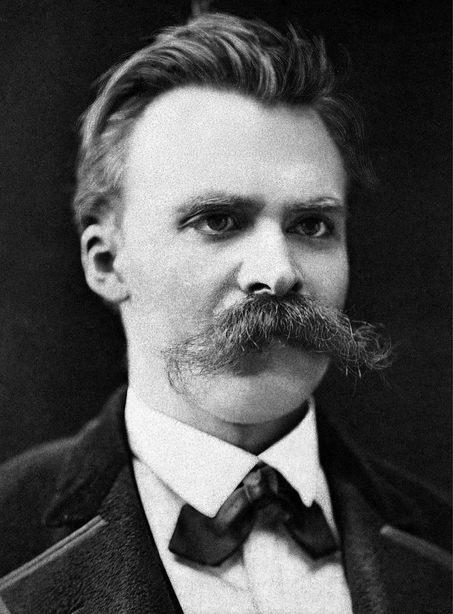

A Playful Introduction to AI and Artificial Societies
Timotheus Kampik
Umeå University
#### AI & Artificial Societies
* Some AI research deals with the modeling and creation of artificial societies
* The behavior of individuals ("agents") in a society may be simplistic
* The observation of the evolution of a society at large is
* intellectually interesting
* societally relevant?
* Simple example: SVT
Simple Example: SVT
Simplistic model to illustrate that vaccination is important. SVT Nyheter.
A Step Back
Let us take a step back and explore the basics of simulations like this in a playful manner.
Conway's Game of Life
Grid of tiles
Each tile represents "agent"
Simple rules and neighbor activity decide: is agent active or inactiv?
Initially: random state
Fascinating patterns can emerge, based on initial state
Nothing but the initial state is random!
#### GoL - Standard Rules
* Random initial state
* Any active agent with two or three active neighbors stays active
* Any inactive agent with three active neighbors becomes active
* Agent behavior is deterministic ("predictable")
Game of LifePlaying God in Game of Life - Example
Societal "Rules" Evolve

"[H]ere are exposed those deeper formations in the mountain of humanity which usually remain concealed."
- Friedrich Nietzsche. Menschliches, Allzu Menschliches.
#### More Advanced Extensions
* Consider the *mind* of an agent
* The agent's activity may depend on *beliefs* about the state of its environment
* These beliefs may not be accurate
* An agent might hold beliefs about another agent's beliefs
* $\rightarrow$ now we are in an endless loop!
#### Limitations of Applications
* Assumptions are often simplistic; analogy: game theory, economic rationality
* Minor differences in rules or initial state may lead to drastically different outcomes
* In contrast to physics simulations, there is no unambiguous truth
$\rightarrow$ We can use simulations to study phenomena, but we can't predict based on simulations alone
Tiny Changes in the Model Drastically Change the Outcome
#### Applications with Data- and Model-Driven Approaches
* Simulations allow for a counter-factual investigation: 'What if'?
* If we have a (mathematical) model but do not simulate it, we can answer this question only for simplistic problems
* If we have real-world data, we need to act on the real world to answer this question (expensive, dangerous)
* Simulation augments data and models
#### Concluding Application Example
* Optimize traffic management systems to avoid traffic jams and accidents
* Apply traffic management models (math equations), collect traffic data, and continuously improve
* Before changing the system, evaluate change in simulation
[AI Magazine article](https://www.rapidflowtech.com/hubfs/ai-magazine-smart-infrastructure-for-future-urban-mobility.pdf)
menti.com Code: 8381 4543
Questions?
Do you have problems that (AI) simulations could help solve?
Contact me at tkampik@cs.umu.se
*This work was partially supported by the Wallenberg AI, Autonomous Systems and Software Program (WASP) funded by the Knut and Alice Wallenberg Foundation.*